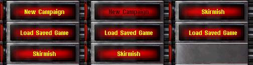

Menu Button Customization¶
Change some menus to hide certain buttons that don’t fit your mod like the Campaign and Play Movies buttons. The default button action will be overridden by the action you defined. You are not limited to just disable the button.
The following buttons can be affected by editing uimd.ini. They default
to default.
[UISettings]►SinglePlayerButton=(action)- The main menu button that leads to the Single Player menu.
[UISettings]►NetworkButton=(action)- The main menu button that leads to the Network menu.
[UISettings]►WWOnlineButton=(action)- The main menu button that leads to the Westwood Online menu.
[UISettings]►MoviesAndCreditsButton=(action)- The main menu button that leads to the Movies And Credits menu.
[UISettings]►CampaignButton=(action)- The Single Player menu button that leads to the Campaign selection menu.
[UISettings]►SkirmishButton=(action)- The Single Player menu button that leads to the Skirmish menu.
[UISettings]►SneakPeeksButton=(action)- The Movies And Credits menu button that starts the sneak peek video.
[UISettings]►PlayMoviesButton=(action)- The Movies And Credits menu button that leads to the Movies menu.
[UISettings]►ViewCreditsButton=(action)- The Movies And Credits menu button that starts the Credits roll.
The following action values are valid:
default: Do not change the action of this button. disable: The button stays where it is, but it won’t be clickable. hide: The button will be hidden. The following buttons are moved so there will be no empty space. message: Clicking the button will show a message box with an OK button and TXT_X_MSG as its text. X equals the flag’s name. credits: Clicking the button starts the credits roll. sneakpeek: Clicking the button starts the sneak peek video.
Examples:
- For mods without campaign support
CampaignButton=hidewill hide the campaign selection button. The menu buttons are reordered automatically so the Skirmish button takes its place. - Mods without movies can use
PlayMoviesButton=hide. - If you don’t have a preview or sneak peek video either you can define
MoviesAndCreditsButton=creditsto show your credits roll from the main menu. This works best if you change its caption also. - You can tell the player of your team if you define
ViewCreditsButton=messageand set the string TXT_VIEWCREDITSBUTTON_MSG to your short copyright message.
New in version 0.2.